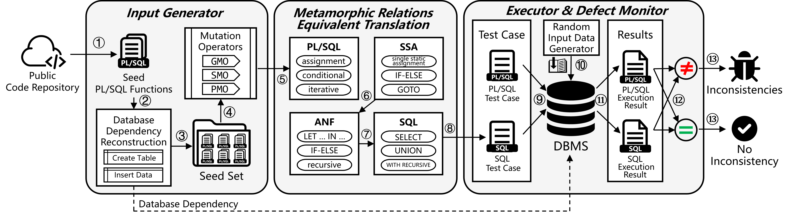

1 Background Investigation
PL/SQL is an extension of the SQL language in a DBMS. We have observed that the understanding of PL/SQL by programmers using PL/SQL seems to be inconsistent with its actual implementation in some cases. This stems from the fact that the programmers using PL/SQL and the developers of the PL/SQL engine in the DBMS are usually not in the same group, and there is a discrepancy between the rationale used by the programmers in their understanding and the rationale used by the developers in their design and implementation. There are various reasons for this gap, such as the fact that PL/SQL is designed and implemented by individual DBMS vendors and therefore lacks a unified specification. In addition, the general redundancy of PL/SQL documentation can cause people to abandon understanding through this possible standard. We conducted a questionnaire-based investigation to confirm this observation.
1.1 Questionnaire
The questionnaire of the research is listed below. The questionnaire consisted of seven questions. Q1 was used to identify the role of the researcher, Q2-Q4 were used to determine the level of proficiency of the researcher in the relevant technology, Q5-Q6 were used to determine the source of the experience base of the programmer or developer when dealing with PL/SQL, and Q7 was used to investigate the ability of the researcher to identify the inconsistencies that already existed in PL/SQL.
[Q1] You are a PostgreSQL / openGauss ______:
A. developer
B. programmer
C. both a developer and a programmer
[Q2] Your level of SQL proficiency (0 for not at all familiar, 10 for professional):
0 1 2 3 4 5 6 7 8 9 10
[Q3] Your level of PL/pgSQL proficiency (0 for not at all familiar, 10 for professional):
0 1 2 3 4 5 6 7 8 9 10
[Q4] How long have you been using PL/pgSQL:
A. Less than 1 year
B. 2-5 years
C. 5-10 years
D. More than 10 years
[Q5, display when Q1 = A | C] As a developer, how do you decide the semantics of a
PL/pgSQL keyword?
A. I refer to some existing imperative language, such as PASCAL and C.
B. Based on my own understanding of the keyword
C. Other (please list):______
[Q6, display when Q1 = B | C] As a user, how do you learn PL/pgSQL?
A. I have SQL experience and mitigate the experience to PL/pgSQL
B. I learn from existing PL/pgSQL projects or examples
C. I learn from the documentation
D. Other (please list):______
[Q7] How many times will the following PL/pgSQL FOR loop be executed?
CREATE OR REPLACE FUNCTION test() RETURNS void AS $$
BEGIN
FOR i IN 0.2 .. 1.5 LOOP
raise notice '%', i;
END LOOP;
END; $$ LANGUAGE plpgsql;
A. 0, the loop will not be executedB. 1, and variable i will be 1
C. 2, and variable i will be 0, 1
D. 2, and variable i will be 1, 2
E. 3, and variable i will be 0, 1, 2
F. It will report an error
G. Other (please list):______
1.2 Characteristics of the Population
Based on the software open source ecology and community activity, we invited users in PostgreSQL and openGauss communities to participate in our research. The number of valid questionnaires we returned is shown in table below.
| Roles | PostgreSQL | openGauss | total |
|---|---|---|---|
| programmer | 11 | 33 | 44 |
| developer | 3 | 2 | 5 |
| both a developer and a programmer | 5 | 3 | 8 |
| total | 19 | 38 | 57 |
The statistics of SQL and PL/SQL proficiency for each role are as follows.
| programmer | developer | both a developer and a programmer | total | ||
|---|---|---|---|---|---|
| Average SQL proficiency (Score, 0-10) |
5.2 | 8.4 | 8.1 | 5.9 | |
| Average PL/SQL proficiency (Score, 0-10) |
2.5 | 7.6 | 6.1 | 3.5 | |
| Time of using PL/SQL | < 1 year | 63.16% | 0.00% | 3.51% | 66.67% |
| 1-5 years | 14.04% | 1.75% | 5.26% | 21.05% | |
| 5-10 years | 1.75% | 1.75% | 1.75% | 5.26% | |
| > 10 years | 0.00% | 3.51% | 3.51% | 7.02% | |
1.3 Sources of PL/SQL Experience
We found that the sources of experience of programmers using PL/SQL and developers developing PL/SQL varied widely.
| Role | Sources of PL/SQL Experience | Proportion |
|---|---|---|
| developer | I refer to some existing imperative language, such as PASCAL and C. | 69.23% |
| Based on my own understanding of the keyword. | 46.15% | |
| Based on documentation. | 15.38% | |
| programmer | I have SQL experience and mitigate the experience to PL/pgSQL. | 76.92% |
| I learn from existing PL/pgSQL projects or examples | 48.08% | |
| I learn from the documentation. | 42.31% | |
| I learn from other means (e.g. instructional videos, tutorial blogs, etc.). | 5.77% |
1.4 Identification of inconsistencies
The percentage of identification inconsistencies is shown in the table below.
| group | proportion |
|---|---|
| total | 12.28% |
| developer | 30.77% |
| programmer | 5.77% |
| Higher proficiency in PL/SQL (>= 5) |
23.53% |
| Lower proficiency in PL/SQL (< 5) |
7.50% |
| PL/SQL longer usage time (>= 5 years) |
57.14% |
| PL/SQL shorter usage time (< 5 years) |
6.00% |
The results show that even those who have been using it for a longer period of time and with a higher level of proficiency, some of them are not able to recognise the inconsistencies present in PL/SQL. Even a small percentage of developers could not pinpoint the actual execution performance of PL/SQL containing inconsistencies.
2 Detailed Approach
2.1 Approach Overview
Figure shows the overview of our approach. The steps are annotated with circled numbers (e.g., ① to ⑬). The whole process of the method is divided into three parts: test input generation, equivalent translation based on metamorphic relations and execution of defect detection.
Our approach employs the process of fuzz testing. Steps ① to ⑬ are used to address the problem of test case generation by mutating the initial seed to generate a large number of test cases. Steps ⑤ to ⑧ use the technique of metamorphic testing to address the problem of test oracle. We use a set of equivalence translations from PL/SQL to plain SQL to construct metamorphic relations. Steps ⑨ to ⑬ involve the automatic execution of testing and the automated detection of defects. A pair of PL/SQL and plain SQL programs with the same semantics, as determined by metamorphic relations, are executed and their output is compared. If inconsistencies arise, it indicates the possibility of an inconsistency.
2.2 Input Generation
In order to execute the PL/SQL engine in the DBMS, the collection of test cases input should be a set of executable PL/SQL codes obtained by mutation and their calling statements. A test case is selected from the seed set. In a test case, the executable PL/SQL code is contained in a FUNCTION as shown in Listing 1, and its call is initiated by a SELECT statement with randomly generated parameters. The test input is obtained by the following steps.
(1) Get initial seeds.
Initial seeds are obtained from the open online code repository. Github is selected as the source of the initial seed and crawled projects with PL/SQL language tags through a crawler.
The crawled projects cannot be used as initial seeds directly, and need to undergo the following pre-process to be used as initial seeds available for mutation.
- Exclude SQL irrelevant files. Although the project is tagged with PL/SQL , not all of the files contained in it are related to SQL statements, but may also be programs in other languages, or junk content such as logs. The .sql suffix of the filename is used as a filter to filter out those files that are SQL related.
- Distinguish between PL/SQL and plain SQL. Both PL/SQL and plain SQL may appear in filtered SQL files. PL/SQL is usually declared in the FUNCTION included. As shown in Listing 1, line 18, the function creation statement has a LANGUAGE clause that requires the function creator to explicitly specify the programming language of the function. PL/SQL code can be filtered from a wide range of SQL statements by the type of programming language in the LANGUAGE clause.
- Slice single function. There may be more than one function containing PL/SQL in a file. Variations, equivalent conversions, and executions of PL/SQL are allowed for only 1 function at a time. Therefore the files are sliced so that only one function exists in each file.
- Remove invalid statements. The conversion translation is based on the correspondence of PL/SQL and plain SQL equivalent semantics. However, some semantic structures in PL/SQL have no counterparts in plain SQL. Therefore, these structures that do not correspond need to be eliminated.
(2) Rebuild data dependencies.
PL/SQL is a programming language in which SQL is tightly integrated with a procedural language. the source of data flow for PL/SQL execution is not only the variables in the procedural language, but also the database that is called when interaction with SQL occurs. The data dependencies required to execute SQL severely affect the successful execution of PL/SQL. But PL/SQL obtained from public code repositories almost always does not provide database dependencies (i.e., statements such as build tables, inserts, etc.).
In order to reconstruct data dependencies, we need to analyze which dependencies are of concern. This method focuses on two types of data dependencies, relational dependencies and function dependencies.
For relational dependencies, relational schema and relations are important components. The relational schema is static and is used to describe the structure of a data table. For a relation R (U, D, dom, F):
- R, name of relation, i.e. the table name in the entity
- U, the set of attribute names that make up the relation
- D, the domain from which the attributes in attribute group U are derived, the definition of the domain usually includes data types, value ranges, constraints, default values, etc.
- dom, mapping of attributes to domains, i.e. what type and range of values are taken by the columns of the tables in the entity
- F, the set of data dependencies between attributes
PL/SQL does not define these data dependencies, and reconstruction is simply backwards extrapolation from PL/SQL. Therefore, not all data dependencies can be fully reconstructed in theory. On the other hand, some data dependencies can theoretically be obtained from PL/SQL, but the extraction cost is too high to spend too much attempt on them. The relational schema that this method tries to extract include: R, U, D, and some dom, without considering the extraction of F.
As for function dependencies, there are several elements to infer. For a function F (P (UP , DP , domP ), R, B):
- F, name of function
- P, the list of parameters of the function, including the name UP of the parameters, the domain DP it comes from and the mapping domP of the parameter name to the domain
- R, the return value type of the function
- B, the body of the function, i.e. the calculation procedure to get the return value
When rebuilding function dependencies, only F, DP , domP and R can be extracted from PL/SQL and the rest of the dependencies will be created by random generation.
Missing these data dependencies can cause PL/SQL execution to report errors and affect the effectiveness of fuzzing. Therefore Algorithm 1 extracts these data dependencies from PL/SQL and reconstructs them in the database by building tables and inserting data, etc.To store all type information, we record all known column types and parameter types in ”typeknown”, including the corresponding table name and function name. At the same time, we use the union set to record the equality relationship between types for type passing.To reduce table and function name conflicts in different functions, we use each project as a separate namespace. After rebuilding the table, we insert ten randomly generated legal records into it. An example of rebuilding data dependencies is shown in the Listing.
(3) Create seed set and sample seed.
Seeds that have completed pre-processing and reconstructed their data dependencies will be added to the initial seed set. During the fuzzing process, a seed will be sampled from the seed set and a new test case will be generated by mutation. In order to expand the number of seeds and increase the diversity of seeds in the seed set, new test cases will be added back to the seed set.
(4) Mutate sampled seed.
The diversity of test cases helps to reveal software defects. Mutations are commonly used to generate more test cases and increase the diversity of test cases [33]. Tarimci et al [30] summarized and implemented 44 mutation operators in order to measure the quality of PL/SQL test case collections by mutation testing. Among them, 17 Generic Mutation Operators (GMO) are obtained from mainstream procedural languages (e.g., C, Python, etc.), 21 SQL Mutation Operators (SMO) are designed for SQL, and 6 PL/SQL Mutation Operators (PMO) are designed specifically for PL/SQL.
Our mutation inherited 14 PMOs and all SMOs from this work. The reason for the trade-off is that some of the mutation operators in this work do not fit into the metamorphic relationbased equivalent translation of this work, or that the mutation is clearly not helpful in increasing test case diversity.
In addition, we also expanded an additional 10 PMOs. all supported mutation operators are shown in table.
The mutation operators are scheduled using a random strategy, i.e., a few are randomly selected from all mutation operators to perform the mutation.
(5) Generate parameters randomly.
The SELECT statement is used to call PL/SQL function. For example, the function in Listing 1 is called using the following statement:
SELECT factorial(10);
The real parameters of the function call need to be determined according to the parameter type here. In other words, the task here is to design a set of methods to generate random values by data type.
2.3 Metamorphic Relations Equivalent Translation
(1) Difficulties and challenges in translating from PL/SQL equivalents to SQL
Difficulties and challenges in translating from PL/SQL equivalents to SQL stem almost entirely from the inherent differences between imperative and declarative languages. Specifically, the challenges manifest themselves in the following ways.
- Obstacle 1: All control flows in PL/SQL need to be broken while using equivalent semantic data flows instead. Establishing this metamorphic relationship between languages of different nature is heuristic and requires many domain knowledge.
- Obstacle 2: Information reuse is available in PL/SQL, and it is possible to do multiple reads and assignments to variables represented by the same variable name as long as they are in scope. However, in SQL, all information is represented through the relational model, which essentially prohibits information reuse (i.e., two columns with the same name in a table are prohibited).
- Obstacle 3: The large variety of syntactic structures with the same semantics in PL/SQL (as shown in table) is not conducive to unifying control flow and data flow. Doing equivalent translations to SQL requires that data flow and control flow be represented in a uniform and clear form first.
- Obstacle 4: The visibility hierarchy of information in PL/SQL and SQL is inconsistent. In PL/SQL, information is ”sequentially visible”, meaning that a variable in the same block can reference any preceding variable. In contrast, SQL is ”nested visible” where a query can only reference subqueries nested within its own clauses.
- Obstacle 5: Target SQL is holistic compared to PL/SQL. Individual statements in PL/SQL are separated by semicolons and are well-defined. The target SQL is a whole query in which the individual elements are implemented by nesting them in a complex grammatical structure.
(2) The first step from imperative to declarative
The first step from imperative to declarative should be to first address Obstacle 1. It is necessary to find semantically equivalent declarative language construct for each imperative language construct.
We extracted three language constructs of PL/SQL - variable assignment, branch control and loop iteration, as shown in table. In fact this is valid for any procedural language.
The declare structure can be approximated as an initial null value assigned to a new variable. The return structure is supported by a special return value variable, as is the case with PostgreSQL’s internal mechanism. These structures can therefore be classified as assign structures.
In this basic set of metamorphic relationships, for variables in PL/SQL, we use a SELECT query without table to correspond to them. Multiple variables corresponding to the SELECT query are placed separately in the LATERAL clause to complete the join, thus forming an overall query. Unlike the JOIN clause, using the LATERAL clause to complete the join allows columns from one table to be used in another, while maintaining the simplicity and readability of the SQL query. PL/SQL usually has a reference relationship between the calculation and assignment of variables, so the LATERAL clause is a good choice.
For branch control in PL/SQL, one idea of using dataflow as a substitute is to map each control flow to a mutually exclusive clause of phase UNION ALL.
Loop iteration in PL/SQL has long been a semantic construct in SQL that is difficult to handle with relational algebra. Common Table Expressions (CTE) in SQL are named temporary table expressions defined by keyword WITH, whose result sets can be referenced in subsequent queries. A recursive query implemented by WITH RECURSIVE is a type of CTE. It is a complement to the traditional relational algebra and consists of a non-recursive term, a UNION (or UNION ALL) keyword and a recursive term that completes the output by conditionally referencing its own recursive query.
An example of translating the three PL/SQL elements of variable assignment, branch control, and loop iteration to plain SQL is shown in figure.
(3) Single Static Assignment (SSA)
Single Static Assignment (SSA) is an intermediate representation used in the compiler. In SSA, each variable has only one definition point, making the control and data flow of the program very precise and clear. By using ϕ functions in the SSA representation, the compiler can more easily track the control flow of the program, which is important for loops and conditional statements.
SSA distinguishes variables with the same name by numbering them. In addition, SSA normalizes the extensive control flow into the form of if/else and goto, and the code is organized into basic blocks with goto labels. By using SSA as an intermediate representation for translation from PL/SQL to SQL equivalents, obstacles 2 and 3 are solved. An example of conversion from PL/SQL source program to SSA form is shown in figure.
(4) Administrative Normal Form (ANF)
Administrative Normal Form (ANF) is a logically equivalent intermediate representation of the program to SSA [34] and can be converted by the conversion strategy of Chakravarty et al [35]. An example of a conversion is shown in figure.
ANF maps the code blocks in SSA to a series of tail recursive functions that call each other. The block’s sequence of assignment statements is expressed in terms of cascades of let bindings.Variables have indentation level visibility through this cascade of bindings, thus solving obstacle 4.
Although ANF’s LET-IN form of cascade binding facilitates program integration as a whole, the obstacle5 has not been fully addressed. Consider the example of a loop with nested loops in figure, where the red arrow marks the inner nested loop. These inner loops require that multiple additional recursive queries be started afterwards by mapping directly to the SQL recursive queries. And WITH RECURSIVE is defined in the SQL standard as a non-nestable single-level workflow. So barrier 5 still exists to map PL/SQL with nested loops into a single-level WITH RECURSIVE.
A tranpoline() scheduler function is proposed to solve this problem. This dispatch function expands all loop bodies (no matter how nested) into mutually exclusive conditional control branches, while using two dispatch variables to determine branch control (as shown in figure). The scheduling variable call indicates which branch the current round will enter, and this branch represents a loop body before it is expanded. After expansion, each round of recursion ends right at the end of the program, and a decision needs to be made whether to exit only one level of recursion, even though only part of the work may have been done before expansion. Therefore, it is necessary to add an additional dispatch variable rec to indicate whether to continue the recursive query or to exit with the final return value.
(5) The generation of the target SQL
The generation of the target SQL is based on the ANF intermediate representation. In fact, there is already a LETIN cascade binding in ANF similar to the subquery, and all that needs to be done is to complete the equivalent translation using the metamorphic relations in table.
At the time of translation, WITH RECURSIVE is used as the body of the target SQL, and the preparation of the program (variable declarations in PL/SQL DECLARE blocks, etc.) is put into non-recursive items. The parts organized by the trampoline() scheduler will be put into the recursive entries. The branch control statement corresponding to the query statement of phase UNION ALL will be used as the main query. And the variable assignment statements spread all over the PL/SQL control flow will be nested in the corresponding position in the main query as a LATERAL subquery in the FROM clause. An example of translating ANF to the target SQL is shown in figure.
2.4 Execution and Defect Detection
After equivalent translation based on metamorphic relations, PL/SQL and translated plain SQL should have the same semantics and their execution results should be the same without bugs. Therefore, execute PL/SQL test cases and plain SQL test cases separately, and compare the results of both executions. If the results of both appear inconsistent, it indicates a potential bug in the DBMS.
The PL/SQL return value type is very flexible and accommodates any scalar or array data type supported by the server. Any composite type (row type) specified by name or a row type specified by record can also be used as a return value. By specifying the OUT or INOUT keyword in the parameter list, PL/SQL can also pass multiple values back to the caller.
In an RDBMS, the data for a query is usually returned as a table structure. Even though most PL/SQL return values are a scalar, they are presented to the caller in a 1-row, 1-column table. In SQL, the rows in the table are usually not stored in any particular order, so the rows returned by the query are not in a clear order either. When PL/SQL and the equivalent plain SQL return values involve multiple rows, special care needs to be taken to ignore the order of the rows when comparing them, i.e., to consider the multiple rows of the return value as a set rather than a list.
Automatic indicator of potential bugs is one of the important factors in whether fuzzing can be performed automatically [33]. Although this method is able to automatically record details of anomalies found to the log when detecting defects, it still requires a lot of manual inspection and analysis to filter them. This is a common problem of fuzzing work. To reduce manual analysis, we have designed some pre-categorization to help organize as much as possible.
3 Static Inconsistency Patterns
We have collated the 8 inconsistencies we found and classified them into 3 categories. We describe these inconsistencies in detail next.
3.1 Inconsistencies of Presumption
(1) Taking CHAR type parameters for granted
CREATE OR REPLACE FUNCTION test(param CHAR) RETURNS TEXT AS $$
BEGIN
RAISE NOTICE '%', param;
RETURN param;
END;
$$ LANGUAGE plpgsql;
(2) Different COLLATE in RECURSIVE query terms
WITH RECURSIVE run(n, t) AS (
SELECT 1, ''::text
UNION ALL
SELECT n + 1, (SELECT (select tableowner FROM pg_tables LIMIT 1)::text)
FROM run
WHERE n < 5
)
SELECT * FROM run;
(3) Parameter COLLATE conflict
CREATE OR REPLACE FUNCTION less_than(a text, b text) RETURNS boolean AS $$
BEGIN
RETURN a < b;
END;
$$ LANGUAGE plpgsql;
-----------------------------------------------
select less_than(param_1, param_2) from
LATERAL (SELECT 'abc' COLLATE "en_US") AS t_param_1(param_1),
LATERAL (SELECT '123' COLLATE "C") AS t_param_2(param_2);
-- execution result
less_than
-----------
f
(1 row)
-----------------------------------------------
select less_than('abc' COLLATE "en_US", '123' COLLATE "C");
-- execution error
ERROR: collation mismatch between explicit collations "en_US" and "C"
LINE 1: select less_than('abc' COLLATE "en_US", '123' COLLATE "C")
^
3.2 Inconsistencies of Overlook
(1) Non-integer FOR LOOP boundary
CREATE OR REPLACE FUNCTION test() RETURNS void AS $$
BEGIN
FOR i IN 0.2 .. 1.5 LOOP
raise notice '%', i;
END LOOP;
END; $$ LANGUAGE plpgsql;
(2) Non empty VOID return value
-- returns an empty set
CREATE OR REPLACE FUNCTION test1() RETURNS SETOF BOOLEAN AS $$
BEGIN
RETURN;
END;
$$ LANGUAGE plpgsql;
-- returns a table with 1 empty row
CREATE OR REPLACE FUNCTION test2() RETURNS VOID AS $$
BEGIN
RETURN;
END;
$$ LANGUAGE plpgsql;
3.3 Inconsistencies of Equivocality
(1) Equivocal keyword INTO
-- Inserting query results into a new table in SQL
SELECT column1, column2 INTO new_table FROM source_table WHERE condition;
-- Assigning query results to variables in PL/SQL
SELECT column1, column2 INTO var1, var2 FROM source_table WHERE condition;
(2) Equivocal keyword EXECUTE
-- In SQL, a prepared statement is created and then EXECUTE is used to execute the plan
PREPARE my_plan (integer) AS SELECT * FROM employees WHERE salary > $1;
EXECUTE my_plan(50000);
-- In PL/SQL, EXECUTE is used to execute SQL statements directly
CREATE OR REPLACE FUNCTION dynamic_query() RETURNS VOID AS $$
DECLARE
sql_query TEXT;
result INT;
BEGIN
sql_query := 'SELECT COUNT(*) FROM employees WHERE salary > 50000';
EXECUTE sql_query INTO result;
-- Here, a dynamic SQL query is executed using PL/pgSQL's EXECUTE and the result is stored in the result variable
END;
$$ LANGUAGE plpgsql;
(3) Equivocal keyword RETURNING
-- The RETURNING clause in SQL is typically used to perform an INSERT, UPDATE, or DELETE operation and return the result
-- set of the affected rows. Its semantics are to return the result set of the operation as part of the query in order to
-- retrieve changed data
UPDATE employees SET salary = salary * 1.10 WHERE department = 'Sales' RETURNING first_name, last_name, salary;
-- In PL/SQL, RETURNING is often used in conjunction with INTO to store the result of an operation in a variable. This is
-- because PL/pgSQL is primarily used for writing stored procedures and functions, and it is often necessary to store the
-- results in variables for subsequent operations.
DECLARE
updated_salary numeric;
BEGIN
UPDATE employees
SET salary = salary * 1.10
WHERE department = 'Sales'
RETURNING salary INTO updated_salary;
-- the updated_salary variable here now contains the updated salary value
-- you can use it in subsequent code
END;
Contact
You can reach us at jiangshan.liu@tju.edu.cn.